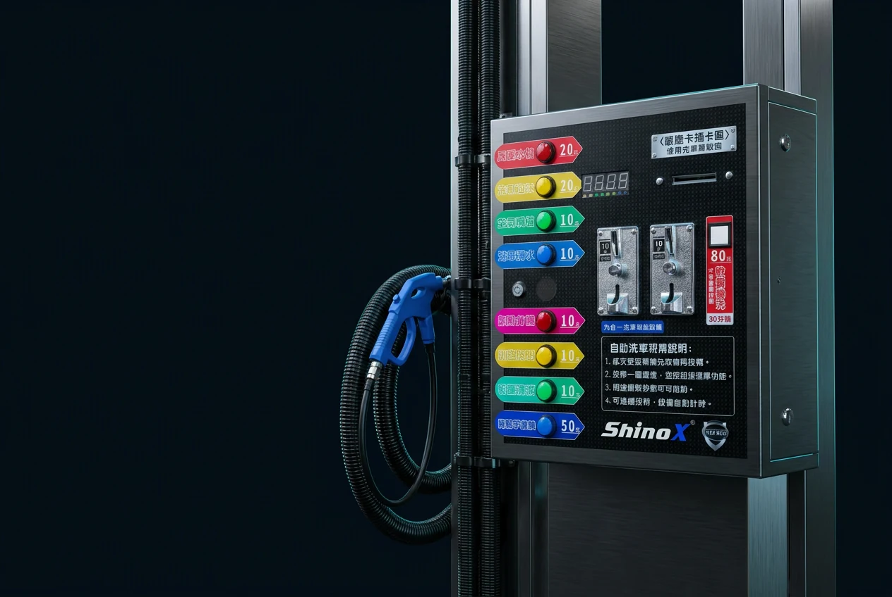
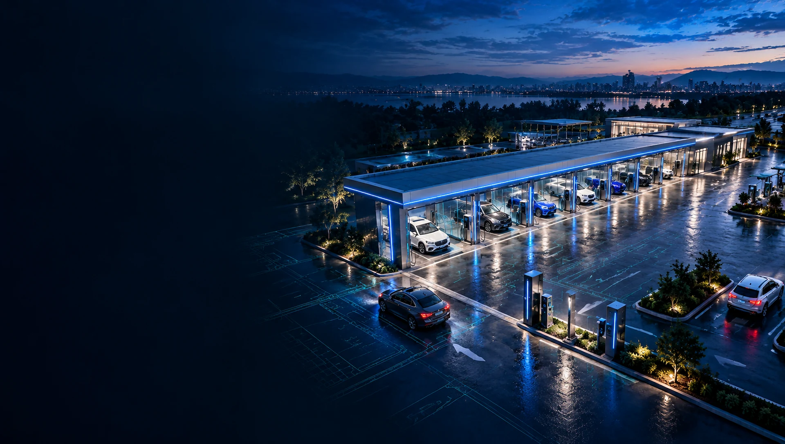
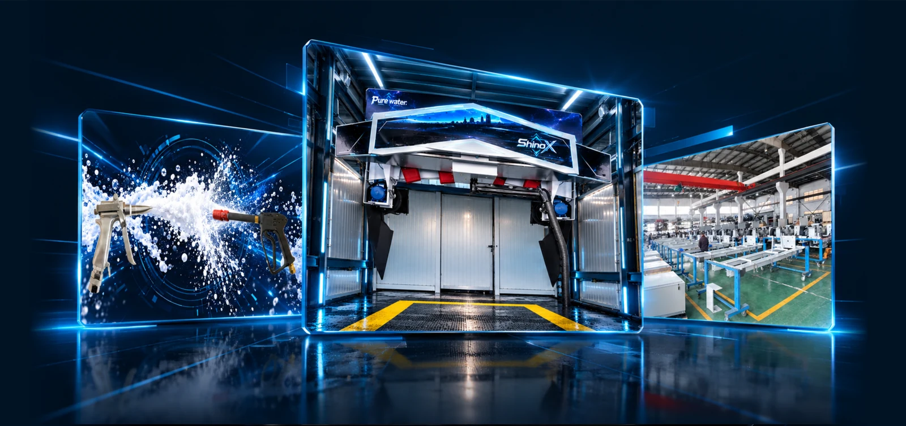
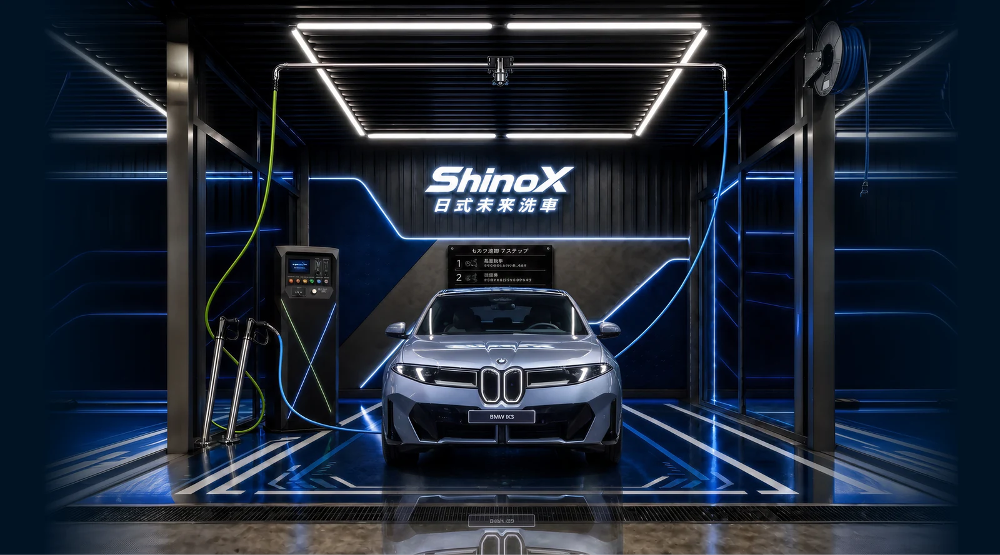
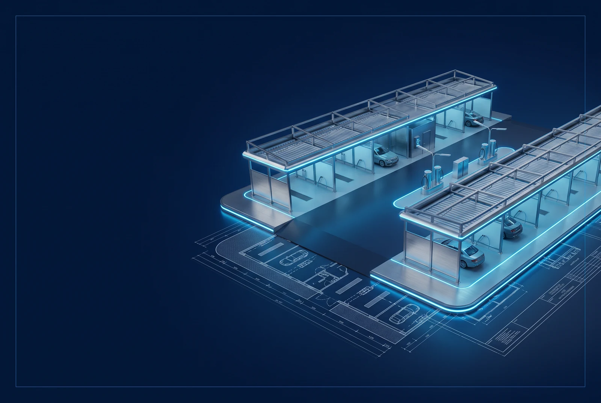
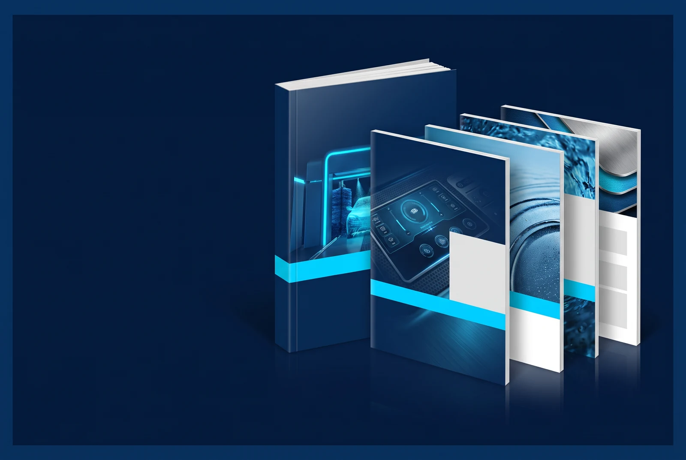

01 / EQUIPMENT
從設備出發
釐清清潔流程、操作及支付需求。
評估不同經營模式，掌握建場規劃方向
試算不代表收益保證，實際規劃請與專人討論。
輸入每日來客數，即時試算月營收與年營收。
試算僅供參考，非保證收益。實際營收依地點、營運與市場狀況而異。
01 / THE SCIENCE OF CLEAN
從金屬結構到每一道水流，
探索串起洗車體驗的科技元素。
02 / ABOUT SHINOX
ShinoX 洗諾克斯專注洗車設備與系統整合，從自助洗車、洗車設備到場域規劃，讓每個建場決定都有清楚的討論起點。
以場地條件與實際需求出發，串接設備選型、配置與建置討論。台灣與海外設備需求，皆可由專人協助確認。
03 / PRODUCT SOLUTIONS
三大類別，十五項設備。
從水處理、洗車流程到場域周邊。

整理位置、面積、出入口與現場條件，討論適用的洗車流程。
依動線與服務需求，討論格位、設備、操作及支付配置。
釐清設備選型、施工協調與後續維護需求，確認各階段事項。
正在規劃 5–20 格自助洗車場？
查看創業指南準備進度 ↗05 / NEWSROOM

06 / SELECTED PROJECTS

07 / RESOURCE LIBRARY

規劃內容：場地需求、5–20 格配置、設備選型與開店流程。不提供投資金額或回本保證。
內容編製中 · 尚未開放下載
包含 B2、M9 洗車機，以及九合一控制箱（投幣款、觸控款）專題 DM。
08 / LET’S TALK
設備諮詢、場地規劃或海外合作，
從一個想法開始。
台灣設備諮詢 / 海外 +886 979 666 302
shinox.car.washer@gmail.com可在 LINE 搜尋官方帳號，或使用右下方連結開啟加友頁面。
先提供偏好日期與聯絡方式，由專人另行確認展示地點及可用時段。此處不提供即時空位或已確認預約。
背景為品牌與展示空間概念示意。正在確認表單服務。亦可直接使用電話或 Email 聯絡。